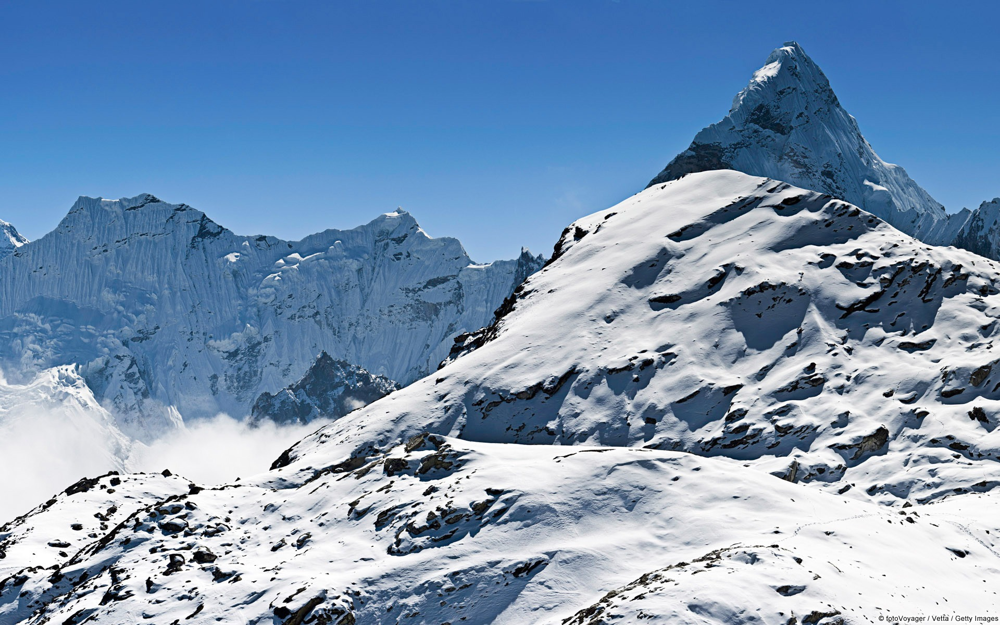
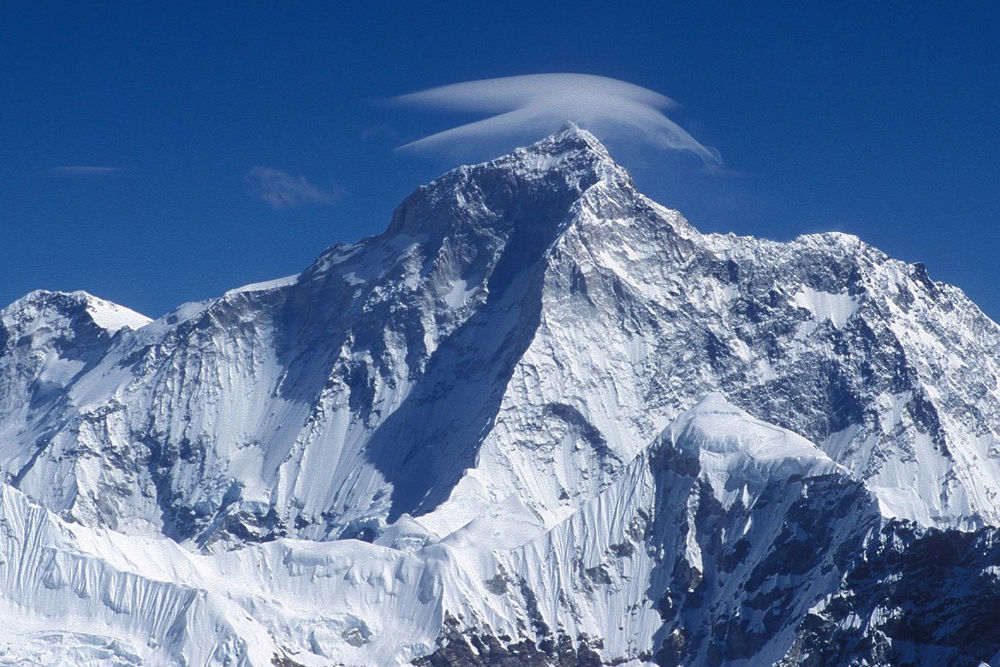
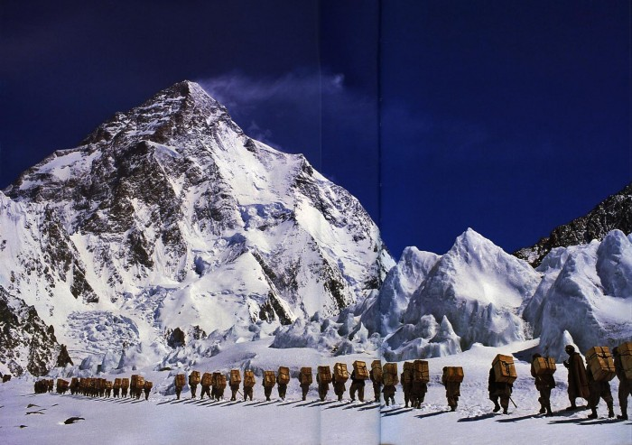
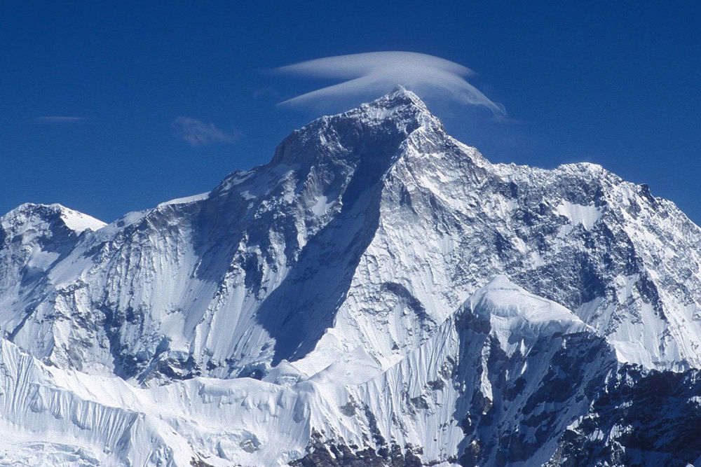
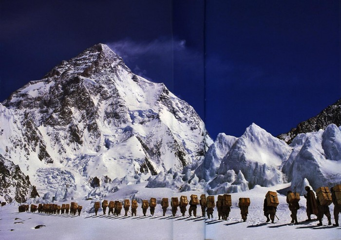

word's 5th highest peak.
MAKALU
A pristine trekking circuit which allows you to circle Mt. Makalu,word's 5th highest peak.
Makalu is the fifth highest mountain in the world at 8,485 metres (27,838 ft). It is located in the Mahalangur Himalayas 19 km (12 mi) southeast of Mount Everest, on the border between Nepal and Tibet, China. One of the eight-thousanders, Makalu is an isolated peak whose shape is a four-sided pyramid.
 Makalu has two notable subsidiary peaks. Kangchungtse, or Makalu II (7,678 m) lies about 3 km (2 mi) north-northwest of the main summit. Rising about 5 km (3.1 mi) north-northeast of the main summit across a broad plateau, and connected to Kangchungtse by a narrow, 7,200 m saddle, is Chomo Lonzo (7,804 m).

 Makalu has two notable subsidiary peaks. Kangchungtse, or Makalu II (7,678 m) lies about 3 km (2 mi) north-northwest of the main summit. Rising about 5 km (3.1 mi) north-northeast of the main summit across a broad plateau, and connected to Kangchungtse by a narrow, 7,200 m saddle, is Chomo Lonzo (7,804 m).
